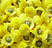
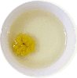

국화차 효능

- 옛부터 불로장생의 차로 간을 보호하고 눈을 발게 하며 머리를 좋게하고 피를 운택하게 한다.
- 비타민이 풍부하며 겨울철 감기 예방에 특효가 있으며 기관지 계통을 깨긋하게 해주는 기침
천식 가래 해소 효등 효과가 볼수 있다.
- 불면증에도 효과가 좋아 우려낸 잎으로 배개를 만들어 사용하면 된다.
국화차를 즐기는 법

- 국화 5인 기준 10 ~ 15송이를 잘 묶으면 향이 좋습니다.,
- 개인별로 차를 낼때는 국화 3~4송이로 우려 마시면 된다.
- 국화의 아름다움은 두 번째 국화차를 우려낼 때부터 느껴실 수 있습니다.
- 녹차를 2~3번 우려낸 후 다양한 향을 느낄 수 있습니다.